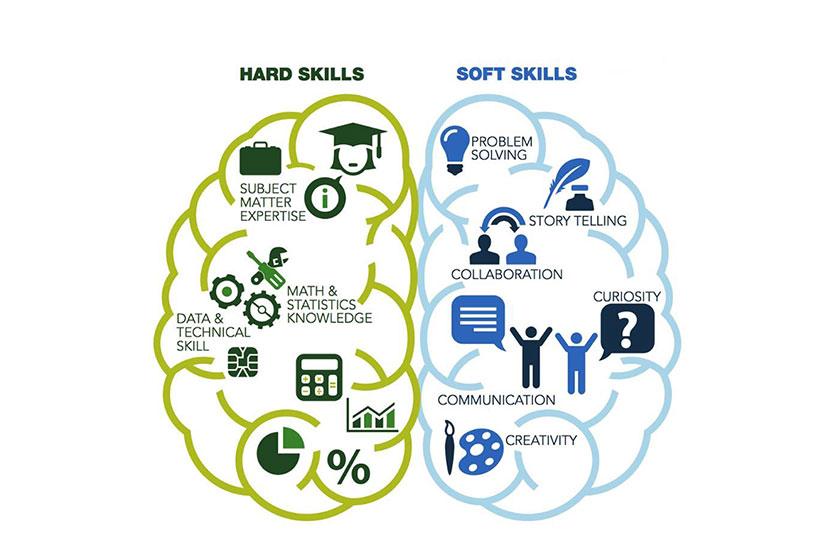

Como já dito antes, Hard skills se referem a habilidades técnicas e específicas relacionadas a uma determinada área ou profissão. Elas geralmente são adquiridas através de treinamentos formais, educação e experiência prática. Exemplos de hard skills incluem habilidades em programação, contabilidade, design gráfico, fluência em um idioma estrangeiro, entre outros. Já as soft skills se referem a habilidades interpessoais e comportamentais que ajudam a gerenciar relacionamentos, se comunicar com eficácia e trabalhar bem em equipe. Essas habilidades podem ser mais difíceis de quantificar, mas são igualmente importantes para o sucesso profissional. Exemplos de soft skills incluem habilidades em comunicação, liderança, resolução de conflitos, empatia, pensamento crítico, entre outras. Em geral, tanto as hard skills quanto as soft skills são importantes para a carreira de uma pessoa, e muitas vezes ambas são necessárias para realizar um trabalho com excelência.

Doutora Monica

~ postado a 21 horas
Nota:
★ ★ ★ ★ ★Qual é a diferença entre hard skills e soft skills?
